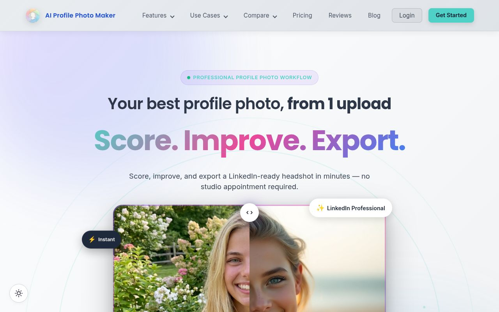
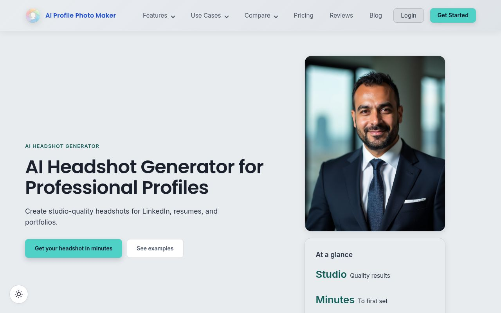
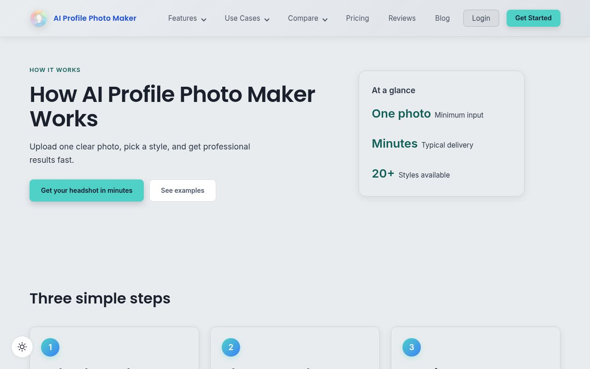
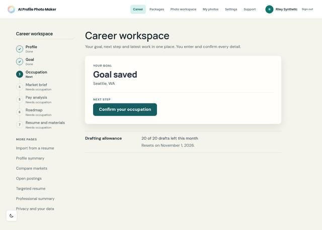

AI Profile Photo Maker
A web app that turned a few selfies into professional headshots by training a personal AI image model for each user. In 2026 it grew a career workspace: people confirmed their own profile and goal, then got a labor-market brief, pay analysis and roadmap based on sourced public data (O*NET, BLS).




What I built
- Per-user model training: uploads were checked for quality, packaged and sent to Replicate for FLUX fine-tuning, with async webhooks driving the job status.
- Payments: Stripe checkout for credit packages, with idempotent webhook handling.
- AI with a budget: OpenAI-drafted career material with daily, monthly and per-user cost caps.
- Privacy by design: biometric consent, 30-day automatic deletion of photos, and self-serve data export and deletion.
- Operations: infrastructure as code (Bicep) on Azure Container Apps, deployed by GitHub Actions; architecture decisions recorded as ADRs.
Stack
Angular · ASP.NET Core (.NET) · SQL Server · Azure Container Apps, Blob Storage, Key Vault · Replicate (FLUX) · OpenAI · Stripe · Postmark · Cloudflare
Why it closed
Free general-purpose AI tools caught up on headshots, and I built far more than I tested with paying customers. The biggest lesson: put a price in front of real people before writing the next feature.
The service closed in October 2026. All user photos, trained models and account data have been deleted. Questions: privacy@aiprofilephotomaker.com